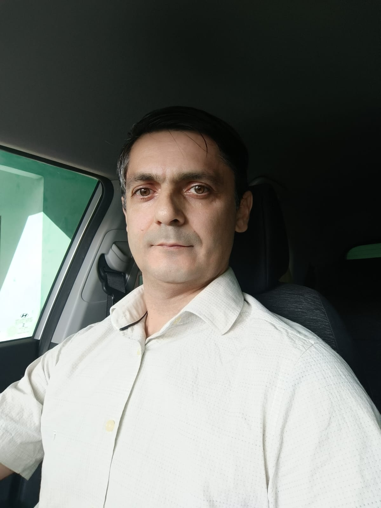
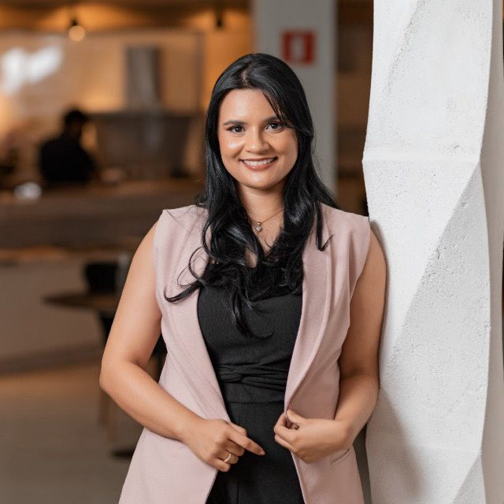
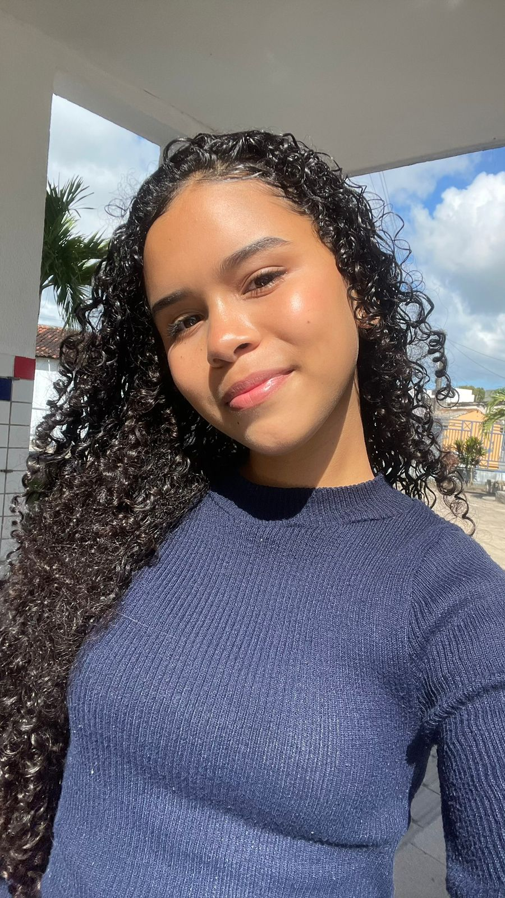
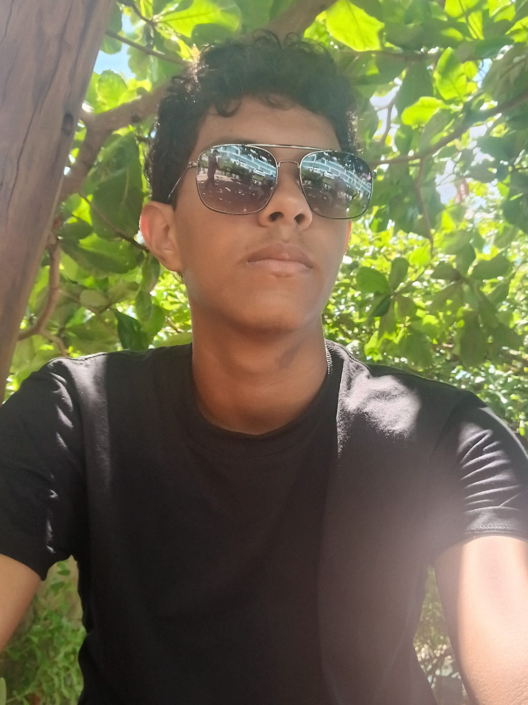
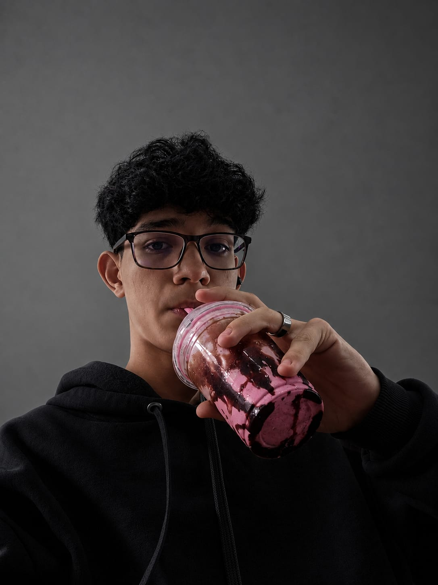
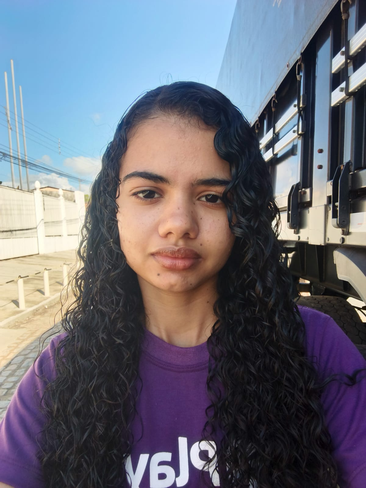
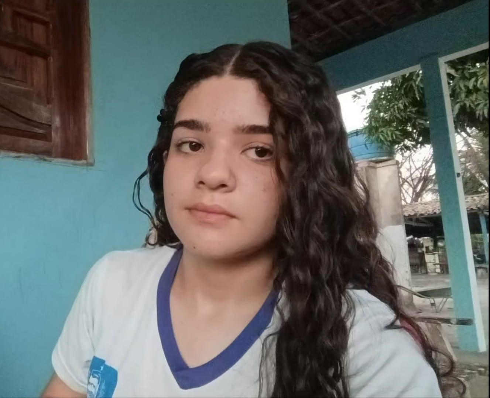
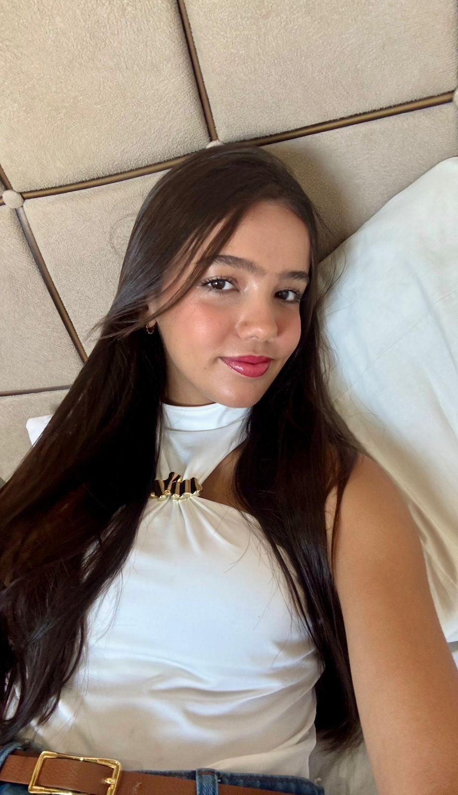
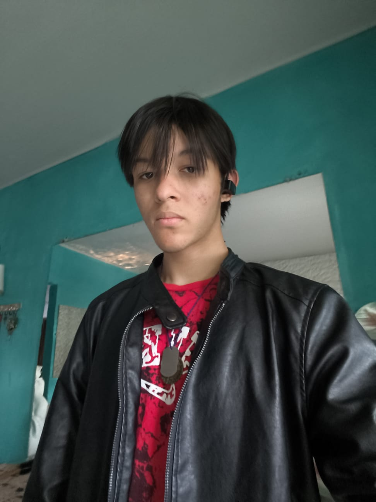

Programa Institucional de Bolsas de Iniciação Cientifica Junior - 2026
CONSTRUINDO O FUTURO COM CÓDIGO
Capacitação em Desenvolvimento Web para Jovens do Ensino Médio na comunidade de Pindorama, zona rural de Coruripe/AL: uma abordagem de inclusão digital e iniciação científica.
programa PIBIC Jr
fomento [FAPEAL]
ano 2026
Quem faz o projeto

Marcos Silva Barbosa
Professor de Matemática na Escola Estadual Professor Lima Castro
Coordenador

Fernando Jorge Siqueira Cavalcante
Professor de Matemática na escola Estadual Professor Lima Castro
Coorientador

Eduina Bezerra França Cavalcante
Professora de Geografia na Escola Estadual Professor Lima Castro
Coorientadora

Carlos Victor Leite dos Santos
Estudante da Escola Estadual Professor Lima Castro, 1 ano C
Estudante

Vitória Tais dos Santos Silva
Estudante da Escola Estadual Professor Lima Castro,
Estudante

Ìgor mickael dos Santos Brito
Estudante da Escola Estadual Professor Lima Castro, 3 ano A - matutino
Estudante

Laura Joana da Silva Santos
Estudante da Escola Estadual Professor Lima Castro, 1 ano A matutino
Estudante

Matheus Lucas Carvalho Santos
Estudante da Escola Estadual Professor Lima Castro, 2 ano B Matutino
Estudante

Huan Matheus dos Santos Silva
Estudante da Escola Estadual Professor Lima Castro, 1 ano A Integral- cooperativismo
Estudante

Luiz Henrique Bispo dos Santos
Estudante da Escola Estadual Professor Lima Castro, 3 ano A Integral
Estudante

Jainny Ketilly dos Santos
[uma linha sobre a informação ou papel no projeto.]
Estudante

Antônio Douglas dos Santos Barros
[uma linha sobre a informação ou papel no projeto.]
Estudante

Nataly da Silva Soares
[uma linha sobre a informação ou papel no projeto.]
Estudante

Maria Jussara Cavalcante dos Santos
[uma linha sobre a informação ou papel no projeto.]
Estudante

Laysa Eduarda De Melo Silva
[uma linha sobre a informação ou papel no projeto.]
Estudante

Nickyson Wallace batista ferro
[uma linha sobre a informação ou papel no projeto.]
Estudante
O trabalho
o que estamos investigando
[um paragrafo explicando sobre o projeto de forma acessivel.
O que se pretende descobrir ou construir.]
objetivos
aonde queremos chegar
[o que o projeto pretende alcançar. seja concreto:o resultado esperado no fim da pesquisa.
justificativa
por que isso importa
[por que vale a pena estudar isso. qual problema resolve para quem e para que.]
vinculo
onde o projeto vive
[a ligação com a escola, com o programa PIBIC Jr
e com as instituições envolvidas.]